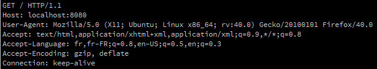
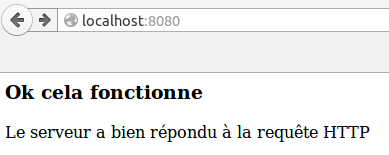
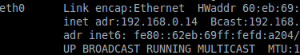

Pour suivre cette série d'activités, il est nécessaire d'avoir déjà des notions en matière de réseau. Si ce n'est pas votre cas, je vous invite à lire ce document.
Il est possible de créer un serveur avec Processing. Dans un premier temps nous allons programmer un serveur web (qui répond aux requêtes de type HTTP), les requêtes HTTP seront émisent par un navigateur web (Firefox par exemple).
La bibliothèque qui gère le réseau n'est pas integré par défaut à Processing, il est nécessaire de l'importer à l'aide de la ligne suivante :
import processing.net.*;
Cette ligne devra être placée au début de votre programme à chaque fois que vous aurez l'intention d'utiliser les "fonctions réseau" de Processing.
Saisissez, analysez et testez ce code
import processing.net.*;
String HTTP_HEADER = "HTTP/1.0 200 OK\nContent-Type: text/html\n\n";
Server s;
Client c;
void setup() {
s = new Server(this, 8080);
}
void draw() {
c = s.available();
if (c != null) {
String msgClient=c.readString();
println(msgClient);
s.write(HTTP_HEADER);
s.write("<html><head><meta charset='utf-8'><title>Processing</title></head><body><h3>Ok cela fonctionne</h3><p>Le serveur a bien répondu à la requête HTTP</p></body></html>");
c.stop();
}
}
Une fois le programme ci-dessus "lancé", ouvrez un navigateur web et tapez dans la barre d'adresse de ce navigateur l'adresse suivante :
http://localhost:8080/
Dans dans la console de Processing, vous devriez avoir quelque chose qui ressemble à :
N.B. Si vous avez d'autres messages du genre "Client SocketException: Socket closed", pas d'inquiétude, cela n'a pas une grande importance.
Dans le navigateur web vous devriez avoir :
Remarque :
Pendant les phases de dévolepement, il est relativement courant d'utiliser une unique machine qui jouera à la fois le rôle du client et du serveur (client : le navigateur web, serveur : le programme "Processing"):
Passons maintenant à l'analyse de ce code :
Le serveur répond à une requête HTTP en provenance d'un client (navigateur web). Pour que la réponse du serveur soit valide (comprise par le navigateur), il faut un en-tête (header en anglais), la variable "HTTP_HEADER" permet de stocker cet en-tête (la variable "HTTP_HEADER" sera utilisée un peu plus loin dans le programme).
String HTTP_HEADER = "HTTP/1.0 200 OK\nContent-Type: text/html\n\n";
N.B. l'enchainement de caractères "\n" est un caractère d'échapement qui permet le saut de ligne.
Puisque nous avons affaire à un échange entre un serveur et un client, il nous faut définir des variables de type "Client" et de type "Server" (la bibliothèque "Réseau" que nous avons importée à la première ligne du programme, propose une classe Serveur et une classe Client).
Server s;
Client c;
Nous créons une instance de la classe Serveur :
s = new Server(this, 8080);
Le premier paramètre du constructeur de la classe Serveur sera toujours "this", le second paramètre correspond au "port d'écoute" du serveur (8080 dans notre cas, mais vous pouvez choisir une autre valeur).
La méthode "available" de la classe Serveur renvoi un objet de type Client si un client cherche à rentrer en communication avec le serveur ou "null" dans le cas contraire (si plusieurs clients cherchent à entrer en communication avec le serveur en même temps, une liste de client est établie et le serveur traitera les éléments de cette liste les uns après les autres.
c = s.available();
Si un client vient d'effectuer une requête vers le serveur, la variable c contient donc un objet de type Client dans le cas contraire (si aucun client ne vient d'effectuer une re), la variable c contient "null". Comme la ligne ci-dessus se trouve dans la fonction "draw" de Processing, la liste des clients est actualisée 60 fois par seconde.
if (c != null) {....}
La suite du code sera éxecuté seulement si un client vient d'envoyer une requête.
if (c != null) {....}
La lignes suivante :
String msgClient=c.readString();
permet de placer dans la variable "msgClient" la chaine de caractère que le client courant vient d'envoyer au serveur. Dans notre cas, le client étant un navigateur web, cette chaine de caractères correspond à une requête HTTP.
Le "println" permet d'afficher cette chaine (la requête HTTP) dans la console Processing.
Le serveur répond ensuite en envoyant l'en-tête de sa réponse HTTP vers le client à l'aide de la méthode write :
s.write(HTTP_HEADER);
puis, on envoie le reste de la réponse (le corps de la réponse) qui est aussi une chaine de caractères qui sera interprété par le navigateur comme du HTML (si le HTML vous est totalement inconnu, n'hésitez pas à consulter cette série d'activités.
s.write("<html><head><meta charset='utf-8'><title>Processing</title></head><body><h3>Ok cela fonctionne</h3><p>Le serveur a bien répondu à la requête HTTP</p></body></html>");
Il est ensuite nécessaire de "cloturer la conversation client-serveur" en utilisant la méthode "stop" de la classe Client :
c.stop();
Il est parfois nécessaire de distinguer la connexion d'un client et l'envoi d'une requête par un client. Le client doit se connecter au serveur avant de pouvoir envoyer une requête, mais une fois connecté, le client peut envoyer plusieurs requêtes sans être obligé de se reconnecter. Dans les exemples traités ici la connexion du client est immédiatement suivi par la requête HTTP, il est donc difficile de distinguer les deux, mais, cela ne sera pas toujours le cas.
Comme déjà vu plus haut La méthode "available" de la classe Server permet de lister les clients venant d'effectuer une requête vers le serveur. La fonction "serverEvent" est appelé lorsque le serveur détecte la connexion d'un nouveau client (le principe est le même que pour les fonctions qui détecte les évenements au niveau du clavier ou de la souris). Attention, si vous utilisez la fonction "serverEvent", la présence de la fonction "draw" dans votre programme est obligatoire (même si elle est "vide").
Saisissez, analysez et testez ce code
import processing.net.*;
String HTTP_HEADER = "HTTP/1.0 200 OK\nContent-Type: text/html\n\n";
Server s;
Client c;
void setup() {
s = new Server(this, 8080);
}
void draw() {
c = s.available();
if (c != null) {
s.write(HTTP_HEADER);
s.write("<html><head><meta charset='utf-8'><title>Processing</title></head><body><h3>Ok cela fonctionne</h3><p>Le serveur a bien répondu à la requête HTTP</p></body></html>");
c.stop();
}
}
void serverEvent ( Server serv, Client clie){
println("Un nouveau client vient de se connecter, son IP : "+clie.ip());
}
Testez ce programme comme dans le "À faire vous-même 1.2".
La fonction "serverEvent" prend 2 paramètres : un objet de type Server et un objet de type Client. Dans le programme ci-dessus, nous utilisons la méthode "ip" de la classe Client, cette méthode renvoi l'adresse IP du client. Dans notre exemple l'IP du client est "127.0.0.1", cette adresse particulière est synonyme de "localhost" (le client et le serveur se trouve sur le même ordinateur).
Le but est de tester le programme vu dans le "À faire vous-même 1.2" avec le client et le serveur sur deux machines différentes. Pour information, il est possible de déterminer l'adresse IP d'un ordinateur sous GNU/linux en tapant dans une console :
ifconfig
Vous obtiendrez quelques choses qui ressemble à :
192.168.0.14 est l'adresse IP de ma machine.
Nous avons dans cette activité programmer un "mini serveur" web (capable de répondre aux requêtes HTTP émisent par un navigateur web). Dans la suite nous programmerons avec Processing toujours le serveur mais aussi le client. Nous n'aurons plus besoin d'utiliser un navigateur web comme client et donc, nous n'aurons plus besoin d'utiliser le protocole HTTP.
Voici un petit résumé de ce qu'il faut retenir de cette activité :